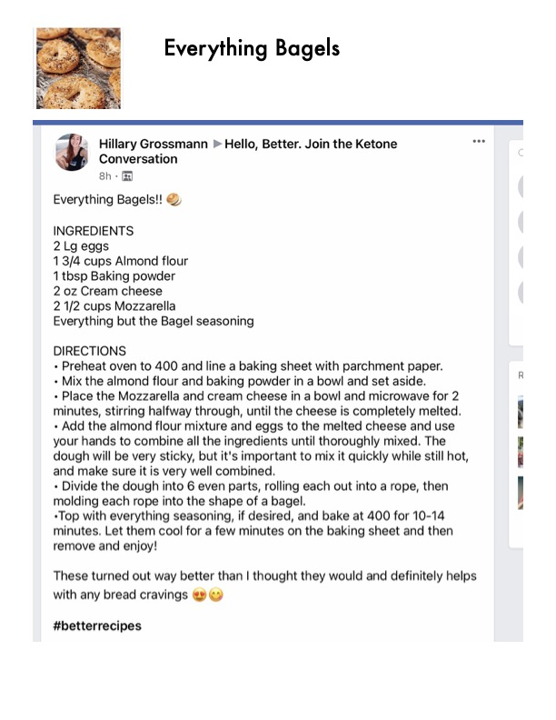

Everything Bagels

Original cookbook page 112
Ingredients
- 2Lg eggs
- 1 3/4 cups Almond flour
- 1 tbsp Baking powder
- 2 oz Cream cheese
- 2 1/2 cups Mozzarella
- Everything but the Bagel seasoning
Instructions
- Everything but the Bagel seasoning
- - Preheat oven to 400 and line a baking sheet with parchment paper.
- - Mix the almond flour and baking powder in a bowl and set aside.
- - Place the Mozzarella and cream cheese in a bowl and microwave for 2 minutes, stirring halfway through, until the cheese is completely melted.
- - Add the almond flour mixture and eggs to the melted cheese and use your hands to combine all the ingredients until thoroughly mixed.
- The dough will be very sticky, but it's important to mix it quickly while still hot, and make sure it is very well combined.
- - Divide the dough into 6 even parts, rolling each out into a rope, then molding each rope into the shape of a bagel.
- -Top with everything seasoning, if desired, and bake at 400 for 10-14 minutes.
- Let them cool for a few minutes on the baking sheet and then remove and enjoy!
Recipe #112 from collection